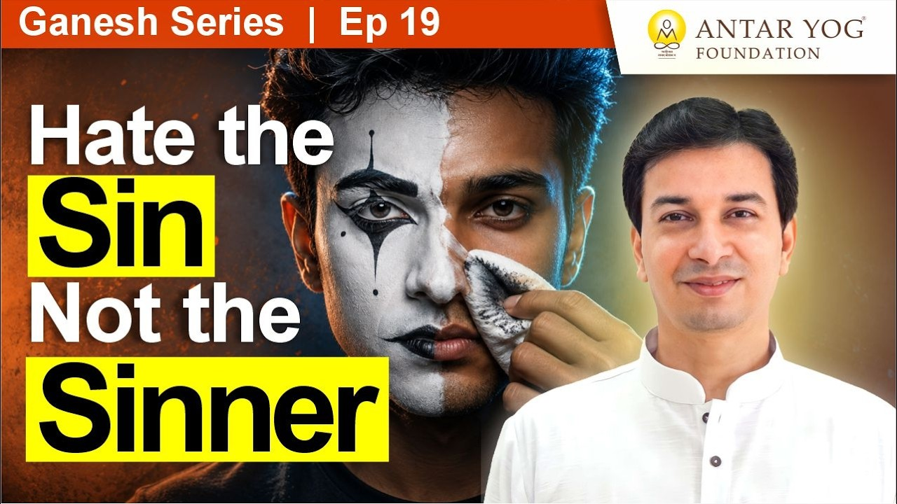

क्या आपकी कहानी का खलनायक सच में पराया है?
हम सबके जीवन में कोई न कोई "खलनायक" आता है। कोई जो हमें चोट पहुंचाता है, हमारा विरोध करता है, हमें गिराना चाहता है।
पर इस प्रवचन में एक चौंकाने वाली बात कही गई है: आपकी कथा में जो खलनायक आपके सामने आया, उसकी पटकथा भी आपने ही लिखी थी, और उसे लेकर भी आप ही आए थे।
आचार्य जी कहते हैं कि जब तक हम साक्षी भाव से नहीं देखेंगे, तब तक भगवान दिखेगा नहीं।
साक्षी भाव (witness consciousness) का अर्थ है जीवन की घटनाओं को भीतर से उलझे बिना, एक दर्शक की तरह देखना।
अस्सी प्रतिशत कैंसर और बीस प्रतिशत आशा
एक उदाहरण पर विचार कीजिए। किसी के शरीर में कैंसर अस्सी प्रतिशत फैल चुका है, चौथी अवस्था से भी आगे। केवल बीस प्रतिशत शरीर ठीक बचा है।
कितने रोगी कहते हैं, "डॉक्टर साहब, छोड़ दीजिए, मैं मर जाता हूं"? बहुत कम। अधिकतर कहते हैं, "अब भी कीमोथेरेपी कीजिए, कुछ तो कीजिए।" केवल बीस प्रतिशत अच्छा होने पर भी उन्हें आशा रहती है कि बाकी अस्सी भी ठीक हो जाएगा।
पर संसार को देखते समय हमारी यह आशा कहां चली जाती है? वहां हमें सब कुछ खराब ही दिखता है, हर ओर शत्रु भाव ही दिखता है।
क्या आपने किसी व्यक्ति के बारे में यह मान लिया है कि वह कभी नहीं बदल सकता?
लड़ना, पर वैर भाव के बिना
यह शिक्षा कायरता नहीं सिखाती। यदि कोई आक्रमण करे, मारने पर भी उतर आए, तो उत्तर स्पष्ट है:
मरना है तो अपने प्रारब्ध (पूर्व कर्मों का फल) से मरूंगा। लड़ना है तो लड़ने का कर्तव्य निभाकर लड़ूंगा। पर उसमें वैर भाव (द्वेष, शत्रुता) नहीं होता।
अभिनेता बनाम पात्र
चलचित्र में एक नायक होता है, एक खलनायक। दोनों अभिनय करते हैं। पर जब तक आप पात्र के भीतर घुसे रहेंगे, तब तक समस्या रहेगी, पुनर्जन्म होगा।
सत्य यह है कि मैं एक अभिनेता था। कभी खलनायक की भूमिका आई, कभी नायक की। कभी हंसा, कभी रोया। जो करना था, वह करता रहा।
साक्षी भाव के बिना हमें खलनायक में अभिनेता नहीं, केवल पात्र दिखता है। हम पूछते हैं, "वह ऐसा क्यों कर रहा है?" जबकि वह किसी निर्देशक के इशारे पर, किसी और की लिखी पटकथा के अनुसार, उतना ही बोल रहा है।
आचार्य जी याद दिलाते हैं कि वह पटकथा भी हमारी ही लिखी थी, और उस खलनायक को सामने लाए भी हम ही थे।
सर्वत्र भगवत् बुद्धि: जब सब में भगवान दिखे
सर्वत्र भगवत् बुद्धि का अर्थ है हर जगह, हर व्यक्ति में भगवान को देखना। यह हो जाने पर, सामने वाला कितना भी बड़ा अपराध करे, वैर भाव नहीं आता।
लड़ना पड़े तो लड़ेंगे, पर वैसे ही जैसे मां अपने बेटे को मारती है। उस मार के पीछे भी यही भावना रहती है:
सर्वे भवन्तु सुखिनः सर्वे सन्तु निरामयाः।
"सभी सुखी हों, सभी रोगमुक्त हों।"
(शान्ति मंत्र)
वाल्या का वाल्मीकि हो सकता है
यहीं से वह प्रसिद्ध वाक्य आता है: पाप से घृणा करो, पापी से नहीं। राजनीति की बुराई से घृणा करो, राजनेता से नहीं।
क्योंकि वाल्या का वाल्मीकि हो सकता है। डाकू वाल्या ही आगे चलकर महर्षि वाल्मीकि बने।
कल का शराबी पति आज सुधर जाए, तो समस्या क्या है? कल का भ्रष्ट राजनेता आज कहे कि अब मैं रामराज्य चलाऊंगा, तो समस्या क्या है? सब संभव है, क्योंकि उसके भीतर भी वही ब्रह्म (परम चेतना) है।
संभावना उसकी नहीं, आपकी दृष्टि की खत्म होती है
जब हम कहते हैं, "इसका कुछ नहीं हो सकता", तो इसका अर्थ यह नहीं कि उस व्यक्ति की संभावना खत्म हो गई।
इसका अर्थ है कि मेरे भीतर का ब्रह्म भाव खत्म हो गया है। मुझे लगने लगा है कि उसके भीतर ब्रह्म नहीं है।
आचार्य जी कहते हैं कि यह याद रखना है कि उस कथा का रचयिता मैं ही हूं।
जिसे आप "असंभव" मान बैठे हैं, क्या वह उसकी सीमा है या आपकी दृष्टि की?
सपने का दृष्टांत
सपना कौन देखता है? मैं ही। तो सपने के पात्रों को शक्ति कौन देता है? मैं ही। उनकी विद्या, उनकी बुद्धि, उनके सारे कर्म, सब मुझसे ही हैं।
बस इतना समझ में आ जाए, तो शत्रु भी पराया नहीं रहता।
श्रद्धा: उन्होंने देखा, तो हम भी देखेंगे
वारकरी "विट्ठला, विट्ठला" कहते हुए चलते हैं। क्यों? क्योंकि पांडुरंग को तुकोबा ने देखा, नामदेव ने देखा, ज्ञानोबा ने देखा, तो हमें भी दिखेगा।
इसी को श्रद्धा (faith) कहते हैं।
मुख्य बातें
- पाप से घृणा करो, पापी से नहीं; संघर्ष हो सकता है, पर वैर भाव नहीं।
- साक्षी भाव के बिना भगवान नहीं दिखता; हम पात्र देखते हैं, अभिनेता नहीं।
- आपकी कथा के खलनायक की पटकथा और उसका चयन आपने ही किया है।
- हर व्यक्ति में बदलने की संभावना है, क्योंकि उसमें ब्रह्म है; वाल्या का वाल्मीकि हो सकता है।
- "इसका कुछ नहीं हो सकता" कहना अपने ब्रह्म भाव के खोने का संकेत है।
- श्रद्धा का अर्थ है: संतों ने देखा, तो हमें भी दिखेगा।
